Lake — the coat redesign
2026-08-02 · why the cape had to go, what replaced it, and the art that is ready for Tripo
1 · Why the cape had to go the measurement
The first Tripo delivery failed twice over. The file arrived corrupt — a resumed download wrote a retry at byte zero, overwriting exactly the block holding the skeleton's bind matrices. That alone is just a re-download. The blocker was the garment: the cape bound to his arms and legs, not his spine. An auto-rigger binds each vertex to the nearest joint, and the cape hung ~35 cm clear of the body where nothing nearby is the spine. Under a stride it scissored with the limbs.
| Model | Bind probe (joint×IBM ≈ I) | Largest sheet region | |
|---|---|---|---|
| finn | 1.9e−06 | — | pass |
| maren | 1.3e−06 | — | pass |
| vesper | 1.95 | 1,610 (collar) | fail, repairable |
| lake (cape) | 1.8e+37 | 7,714 + 6,789 (cape panels) | re-roll |
Cape panel A came back 85.9% arm-weighted; panel B 67.1% arm /
27.7% leg. For scale, the largest sheet on any shipped model is Vesper's collar at 1,610 verts.
The swept-back pose was vindicated in the same pass — arms were separate closed loops at
42–52% (matching Finn), both hands 100% clean — so the pose survived and only the garment changed.
Instrument: tools/char_intake.py.
2 · Three garment directions
Rendered as full A-poses, because that is the view that has to bind.
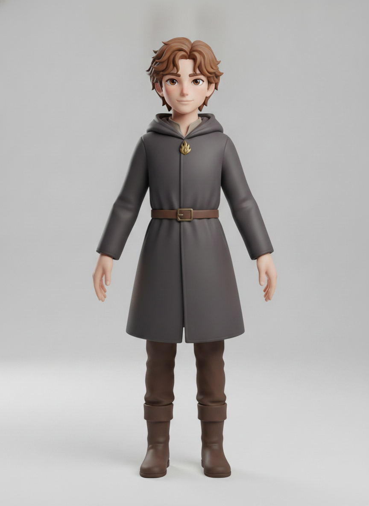
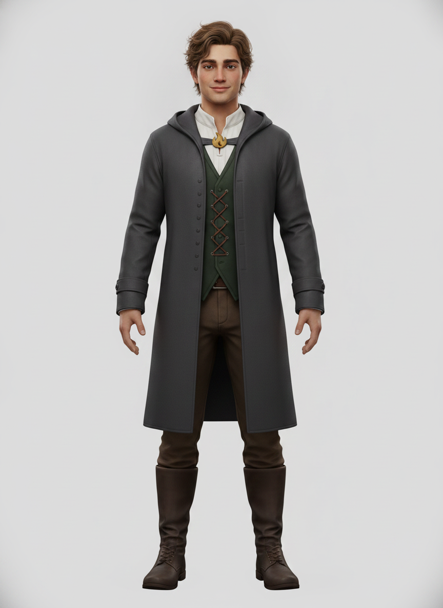
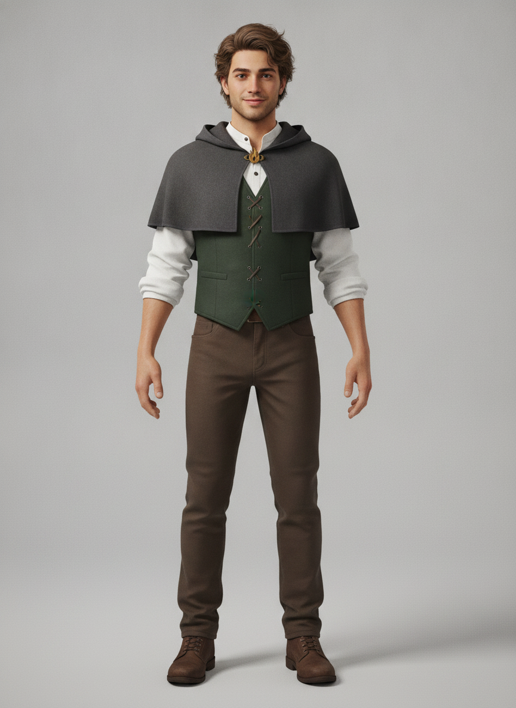
char_intake.py reports those panels arm-weighted on the
next delivery, the fallback is variant A: belt it closed. That costs one Tripo run, not a
redesign.3 · The flame vest three temperatures
Green out, flame in. All three held style and identity perfectly — which is itself the round's methodological result (see below).
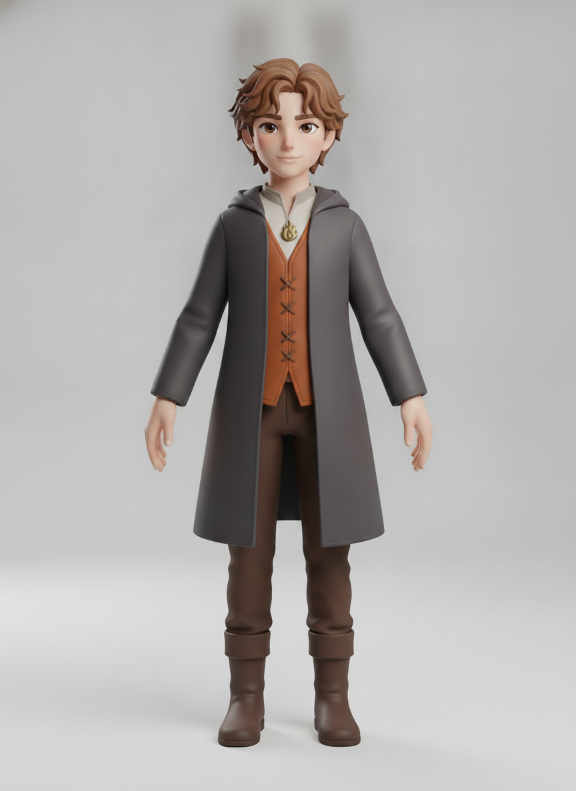
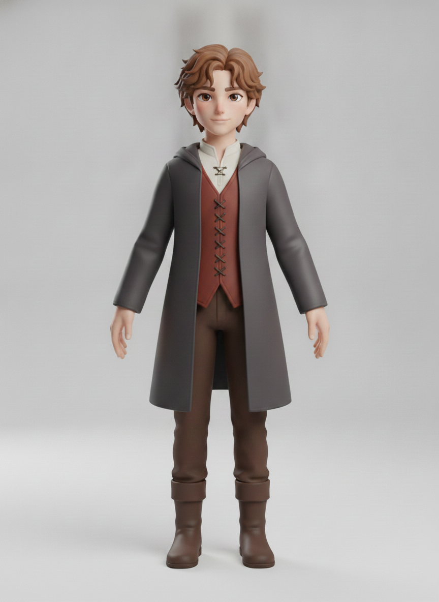
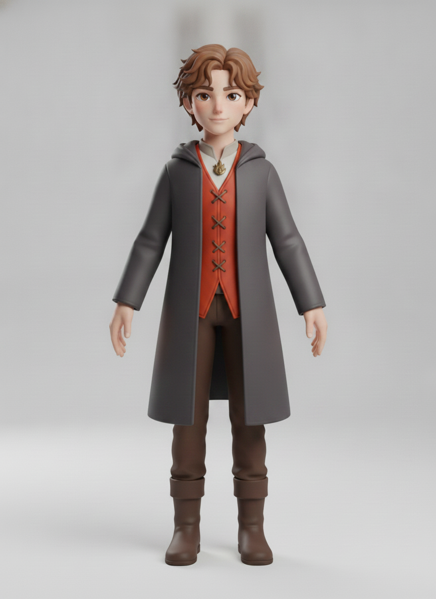
4 · Re-anchored: busts and refs
Done before anything downstream, so no stale art can leak into a later generation.

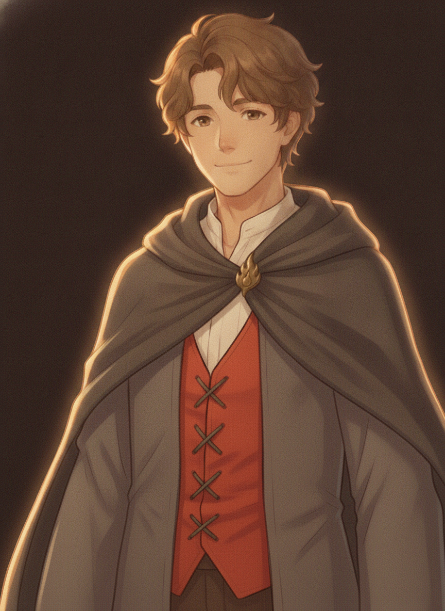
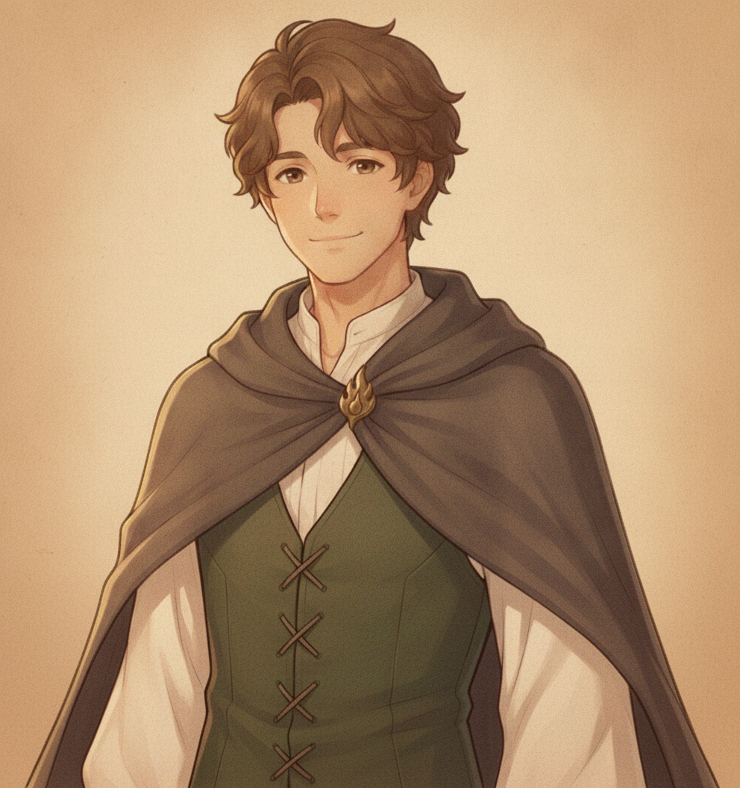
bust-cape-superseded.png.5 · Shipped — the turnaround for Tripo

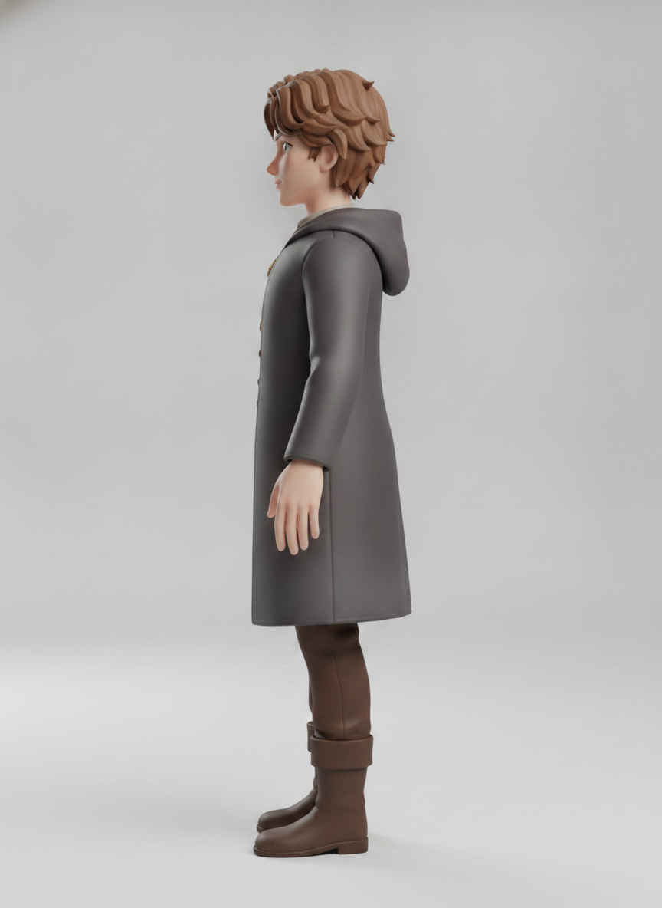
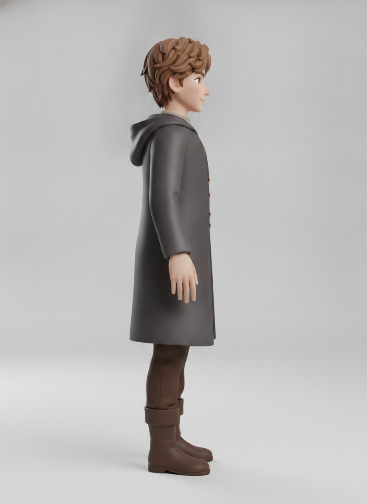
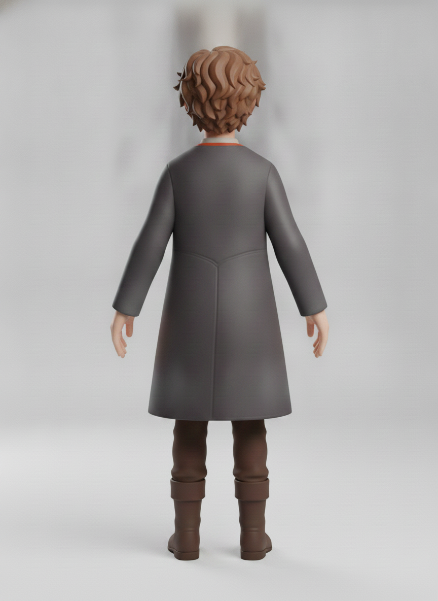
Known slip, accepted under the prototype bar: the two profile views draw buttons down the coat's front edge that the front view has no trace of. Tripo weights the front most and the buttons sit on an edge seen edge-on, so the mesh cost is small — not worth another round.
6 · Two method findings worth keeping
Prose cannot pin a style; a correct picture can. Rolls conditioned on bust.png
drifted to semi-photoreal ~7-head adults 4 times in 5. Rolls chained off an already-on-model
A-pose held both style and identity 6 times in 6. So the whole chain now hangs off
turnaround/front.png, and gen-character.mjs's normal
text-only-first-link chain was bypassed deliberately — regenerating this face from prose returns a
plausible stranger.
The reference image dictates the crop; prose does not reach it. Asking for a "half-body bust" while passing a full-body A-pose returned a full-body render. Passing a chest-up crop of that same A-pose returned the bust. Independently the same finding the cut-in pipeline measured.
A third, recorded as a null result: a refinement round asking for a narrower coat skirt returned three near-identical images — the model refused the edit. Moot anyway, since a skirt binding to the legs is a skirt behaving correctly. The cape's error was binding to the arms.
7 · Still stale — not yet re-rolled
All 11 cutin-*.png moods (front-draped cape, green vest — the colour change
alone makes every one of them wrong), expr-*.png and sheet.png (July 19,
pre-redesign black-haired look). Recorded in the config under _supersededArt so nothing
passes them as an identity reference — that exact mistake blended two faces once already.
Correcting an earlier note on this page. While the cape survived as a garment, the cut-ins deliberately drew it draped forward (dramatic, chest-up) while the turnaround swept it back (bindable) — one garment, two drapes, which is fair because a portrait never animates. That reasoning died with the cape. Lake now owns no cape at all, so a cape in a portrait is a plain continuity error: the cut-ins need re-rolling to the open coat, not merely recolouring.